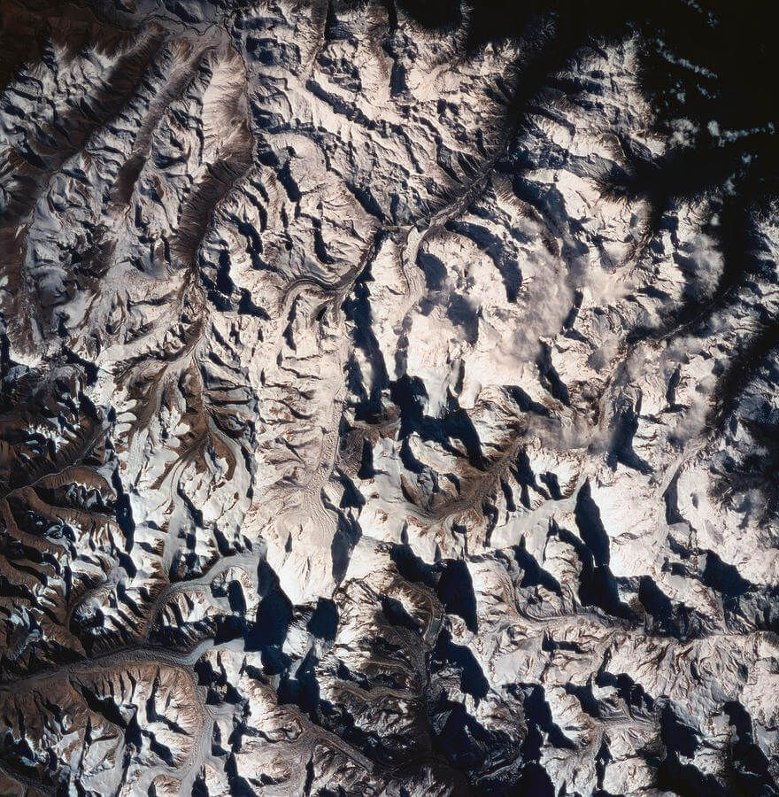
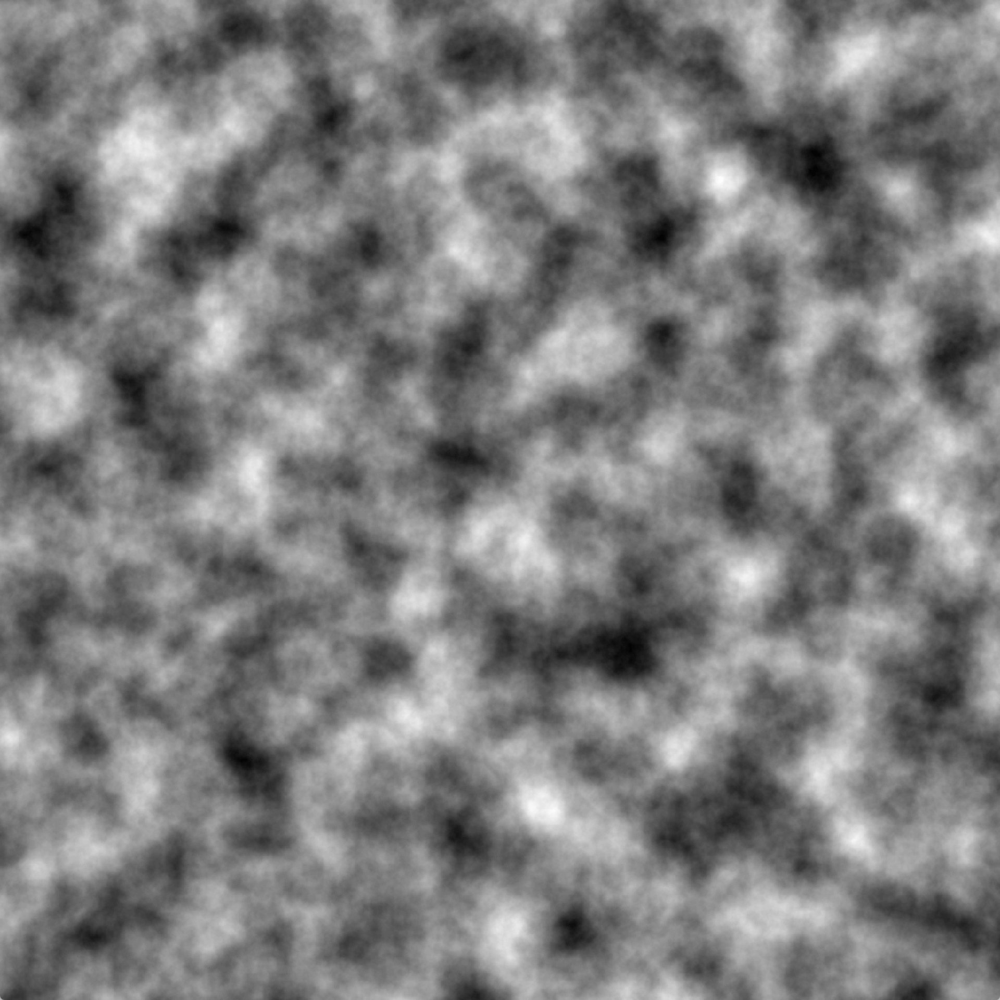
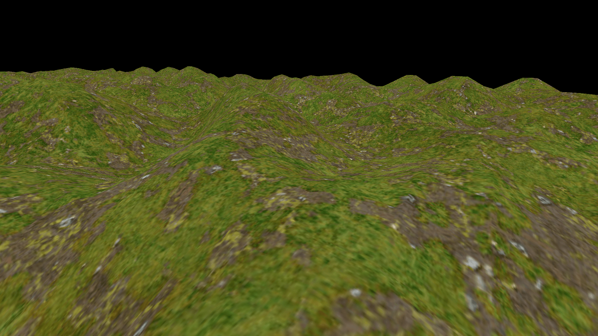
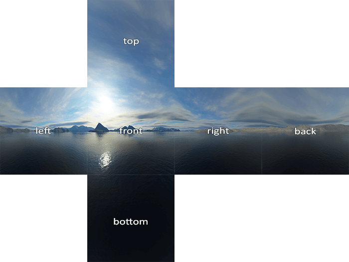
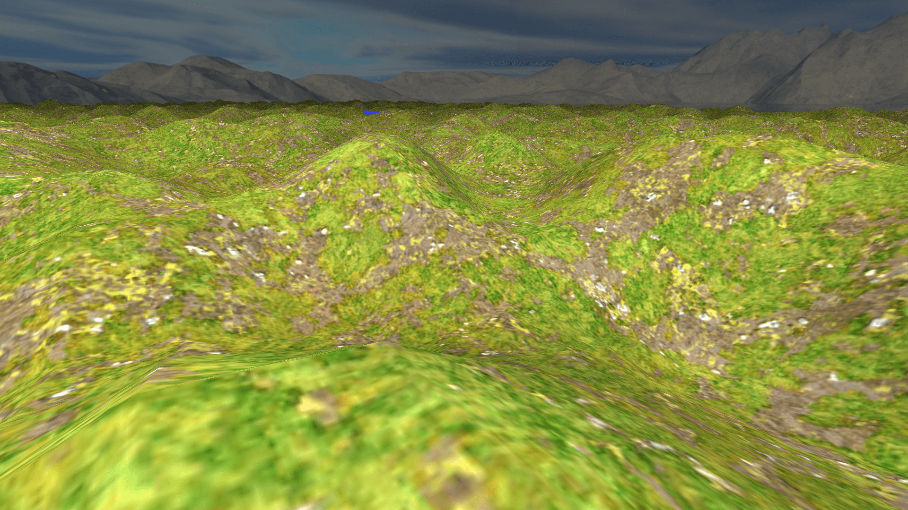
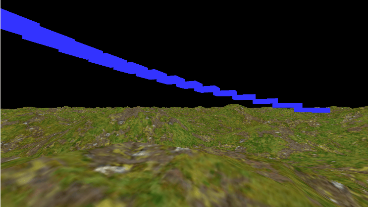
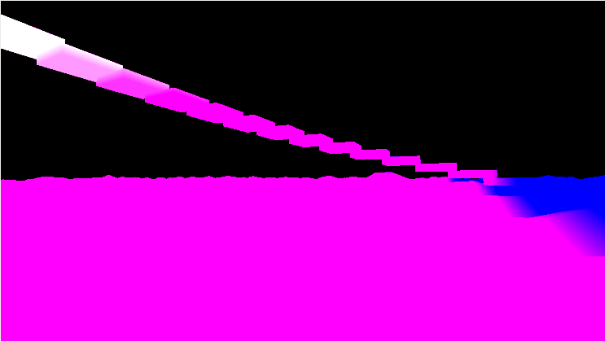
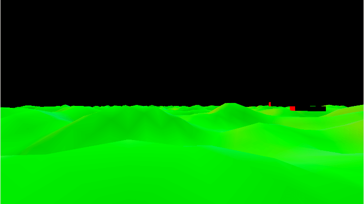
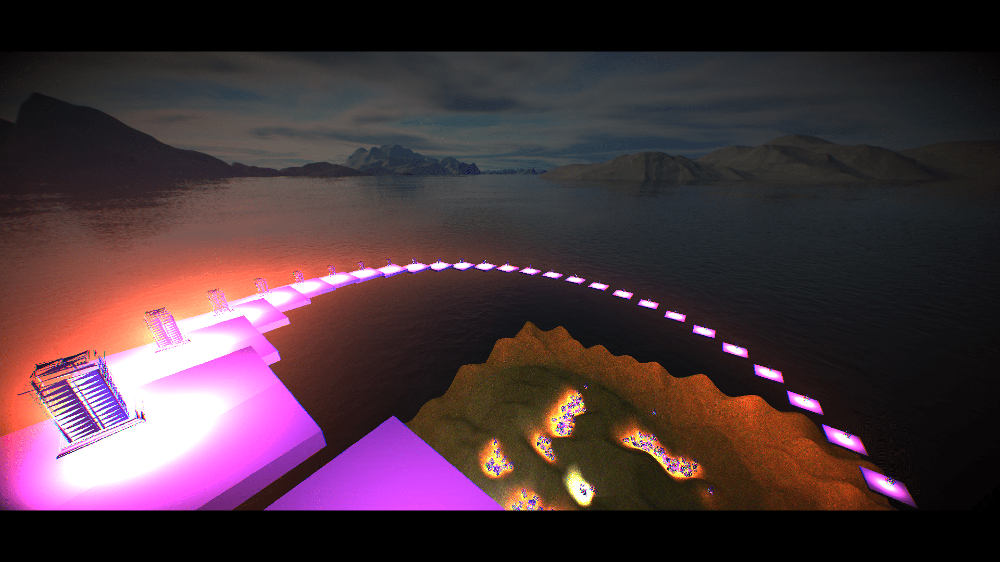

The fun of playing with shaders
Summary
Today we will leverage our GPU to make a cool 3D demo that includes custom shaders, fancy lighting techniques and even include a physics engine to enable have some interaction. If realism is your vice than it will be a bitter story, for today we only care about creating something that looks cool and can handle a shit ton (order of 103 to be precise) light sources.
You can check out the final result here: Github
Introduction
Inside your computer is a device that is amazingly powerful but also tediously hard to use. Your Graphics Processing Unit (GPU) is responsible for pretty much anything visual. Even if you do not have a dedicated graphics card, then you likely have a CPU that has onboard graphics. Basically a small build in GPU, which is still quite powerful. It provides all those millions of pixels on your screen with a color to display, often 60 times per second or more! So it goes without saying that its reputation as a workhorse precedes it. Now let's use it to have some fun.Step 1: Some mountains
As my profile picture on the /about reveals, mountains are my jam. They are an inspiration, a place where you can lose time and get some great ideas about what to do with your time in the flatlands later. So let the first building block be homage to them giants. In my opinion, to only proper way to get mountains is to use a random process, we shouldn't be playing god after all. The process of generating terrain is actually pretty straightforward using a height-map. A height-map is an image that contains a luminance value per pixel indicating the height of that pixel. You can compare it to looking at a satellite photo.

Now all we have to do is convert that map to a large list of triangles. We can regard every 2x2 grid pixels as a quad which we can fill using two triangles. Then we just slap on a simple grass texture.1

Step 2: Skybox and global illumination
To fill the black void and get a sense of fresh air we could put a big box around our world with the texture of sky with mountains on it. This way we get the illusion that we are part of a much much bigger world.
The fact that the sky now contains a sun makes it even more obvious that our mountains are lacking proper shading. We could solve this by introducing a point light at a location that matches the texture. Shading with a point light is quite simple, we only look at the angle with which the light hits our geometry. For every pixel on the heightmap we know the direction of the normal (a vector perpendicular to the triangle it belongs to) and we can calculate the angle between that vector and a vector pointing to the light source. If we use the cosine of this angle a scalar we get a situation in which fragments that are facing the light directly will get cos(0)=1, maximum illumination, whilst fragments completely perpendicular to the light will get cos(1/2* π) = 0, or no illumination.
Now it is not our intention to create some sort of devilish light that contributes negatively to fragments facing away so we should not forget to clamp our scalar to not go below 0.
Finally, light does not travel without cost, or more accurately, light does not stay focused as it spreads out over a bigger area. So in addition to the angle, we should also use the squared distance to the light as a falloff mechanism.
The pseudo code for the fragment shader is below.
// Global illumination fragment shader
#version 450
uniform vec3 uCamPos;
uniform sampler2D tex;
uniform vec3 lightPos;
uniform vec3 lightCol;
in vec2 uv;
in vec3 fragPos; // World space position of the fragment
in vec3 fragNormal;
out vec4 color;
void main()
{
// define a vector towards the light source
vec3 lightRay = lightPos - fragPos;
// dot product of a vector with itself gives the square length.
float lightDis2 = dot(lightRay, lightRay);
float falloff = 1.0f / lightDis2;
vec3 lightNormal = normalize(lightRay);
// Use the angle between the normal and the light vector to get a scalar
float diffuse = max(dot(lightNormal, fragNormal), 0);
color = diffuse * texture(tex, uv);
}

Step 3: More lightsources
In the previous step we have introduced our first light source. The information for this light source was given to our shader via uniform variables: one vec3 for the color and another vec3 for the position.
This traditional method is all fine and dandy until you realise that the fragment shader is executed for every pixel that is rendered, even if another object is rendered on top of it later! This means that not only do we have to iterate over all light sources for every pixel we render, but we are also likely to do all those, rather non-trivial, calculations for nothing as the fragment may turn out to be behind other fragments. This especially becomes a problem when we add more light sources and more and more illuminance calculations need to be added together.
The solution for this is a very neat trick called Deferred Shading, which was developed back in 1988 by Michael Deering2. The idea is quite simple, instead actually performing the calculation for lightness we just save all the values we need for it to a set of textures. Now if fragments get rendered in front it we haven't wasted as much effort. For a minimal example we need at least the following pieces of information to be saved per fragment.
- The diffuse color
- The specular color
- The world space position
- The normal



Now our lighting pass is not much different, instead of getting the information from the vertex, we read it from the textures we generated in first pass.
# version 450
layout(location = 2) uniform vec3 uCamPos;
layout(location = 3) uniform float uTime;
layout(location = 4) uniform sampler2D posTex;
layout(location = 5) uniform sampler2D normalTex;
layout(location = 6) uniform sampler2D albedoTex;
layout(location = 7) uniform sampler2D lightingTex;
layout(location = 8) uniform vec3 lightProperties;
layout(location = 9) uniform vec2 screenSize;
layout(location = 10) uniform vec3 lightPos;
layout(location = 11) uniform vec3 lightCol;
layout(location = 13) uniform float lightness;
out vec4 color;
void main()
{
//color = vec4(1,1,1,0.2f); return;
vec2 uv = gl_FragCoord.xy / screenSize;
vec3 fragNormal = normalize(texture(normalTex, uv).xyz);
vec3 fragPos = texture(posTex, uv).xyz;
vec3 fragColor = texture(albedoTex, uv).xyz;
// We use only the red channel as the specular value
vec3 lightingValues = texture(lightingTex, uv).rgb;
...
}
Finally we can render a sphere with a radius that is proportional to the light's brightness and use the lighting shader above to color each fragment. This gives two major speedups. First of all, we don't perform lighting calculations for fragments that are too far away from the light source to anything at all. Secondly, when a light source is behind us, the process is already stopped by clipping the sphere against the view frustrum, saving a lot of time and effort.

Step 4: Post processing and importing a physics engine
Let's just pretend like that costs no effort at all and jump to end result:
Final thoughts
I am quite pleased with the end result. Performance wise I was able to render about 2500 light sources, including a lantern mesh and halo glow, before the framerate dropped below 60fps.
If you want a better source to learn how to do it yourself you must check out this post by LearnOpenGL, who does a far better job at explaining the technique than I do.
All in all, this post is not my best work. I've been struggling to get it done and after a while it just became this ulcer that I just had to get through. And that is what I did. Sometimes quantity is better than quality, albeit for the writer, not the reader.
Notes
1. Lovely seamless textures available for non-commercial purposes on davegh.com
2. You can read the paper here.